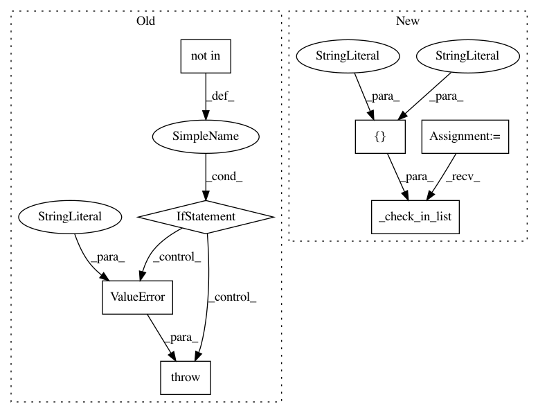

c0f839bf9b332c410f393ed330271fbcf8128f40,lib/matplotlib/scale.py,LogScale,__init__,#LogScale#Any#,331
Before Change
"{"basey", "subsy", nonposy"}. You passed ") +
"{!r}".format(kwargs))
if nonpos not in ["mask", "clip"]:
raise ValueError("nonposx, nonposy kwarg must be "mask" or "clip"")
if base <= 0 or base == 1:
raise ValueError("The log base cannot be <= 0 or == 1")
if base == 10.0:
After Change
base = kwargs.pop("basex", 10.0)
subs = kwargs.pop("subsx", None)
nonpos = kwargs.pop("nonposx", "clip")
cbook._check_in_list(["mask", "clip"], nonposx=nonpos)
else:
base = kwargs.pop("basey", 10.0)
subs = kwargs.pop("subsy", None)
nonpos = kwargs.pop("nonposy", "clip")
In pattern: SUPERPATTERN
Frequency: 4
Non-data size: 7
Instances
Project Name: matplotlib/matplotlib
Commit Name: c0f839bf9b332c410f393ed330271fbcf8128f40
Time: 2019-02-22
Author: anntzer.lee@gmail.com
File Name: lib/matplotlib/scale.py
Class Name: LogScale
Method Name: __init__
Project Name: matplotlib/matplotlib
Commit Name: 93e0f39c8ed9a5a51d0acd38a885aaed96dd7c0e
Time: 2019-02-23
Author: 2836374+timhoffm@users.noreply.github.com
File Name: lib/matplotlib/widgets.py
Class Name: RectangleSelector
Method Name: __init__
Project Name: matplotlib/matplotlib
Commit Name: 93e0f39c8ed9a5a51d0acd38a885aaed96dd7c0e
Time: 2019-02-23
Author: 2836374+timhoffm@users.noreply.github.com
File Name: lib/matplotlib/scale.py
Class Name: LogScale
Method Name: __init__
Project Name: matplotlib/matplotlib
Commit Name: c0f839bf9b332c410f393ed330271fbcf8128f40
Time: 2019-02-22
Author: anntzer.lee@gmail.com
File Name: lib/matplotlib/widgets.py
Class Name: RectangleSelector
Method Name: __init__